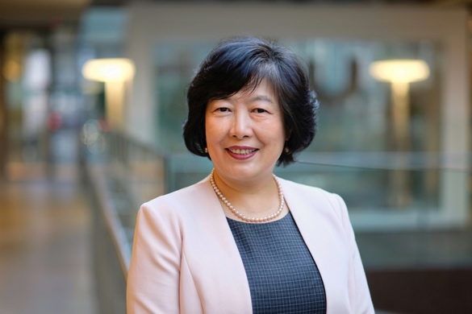
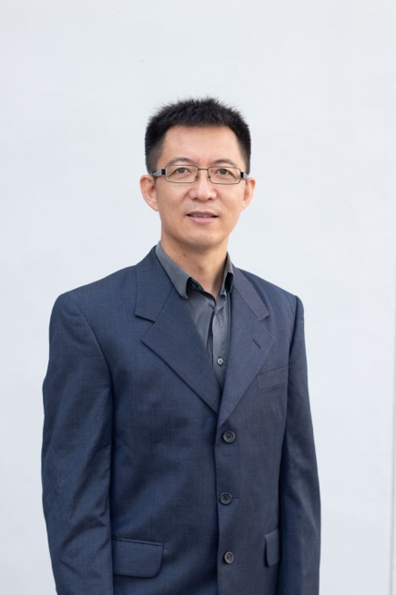
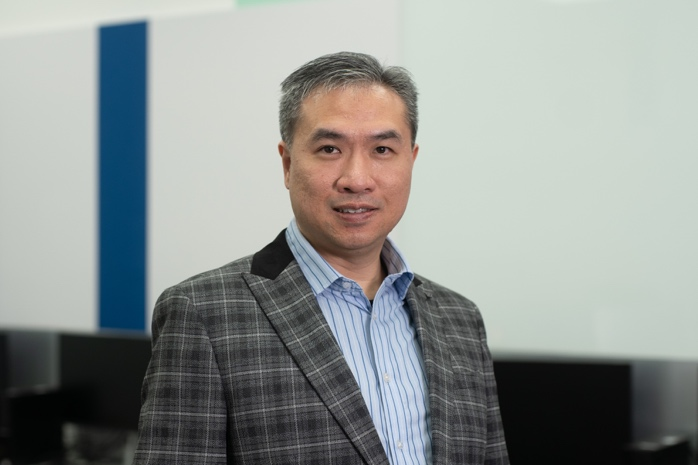
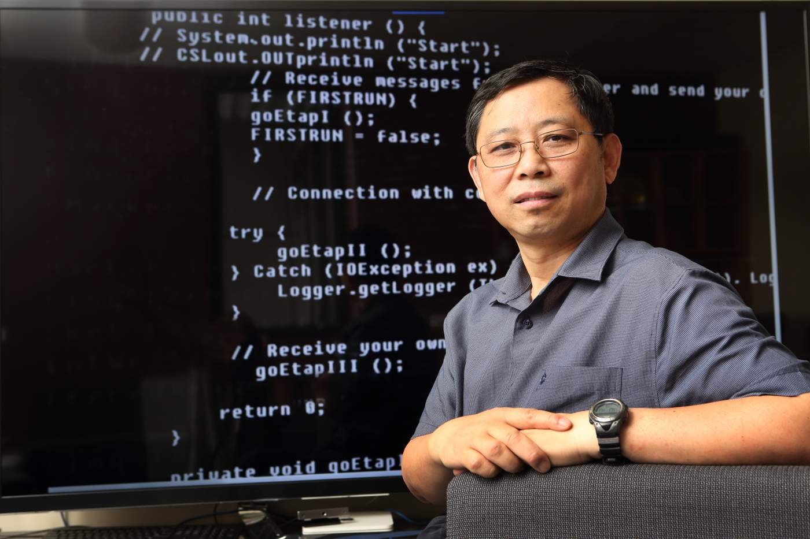

ADMA 2026 Panel Discussion
Date & Time: 14 November 2026 (Saturday), 10:30 - 11:30
Venue: Riverside Ballroom (1F) in Regal Riverside Hotel, Hong Kong
Topic: How is AI affecting our research community?
Abstract:
This panel examines the multi-faceted impact of large language models (LLMs) and AI tools on the data mining and database research community. It explores current and emerging AI tool practices in the following six categories: (1) writing practices, (2) reviewing practices, (3) training of researchers, (4) integrity and detection, (5) research values and metrics, and (6) broader community equity and diversity.
Moderator: Jianxin Li (Edith Cowan University)
Panelists:
- Jie Lu (University of Technology Sydney, Australia)
- Gao Cong (Nanyang Technological University, Singapore)
- Reynold Cheng (University of Hong Kong, Hong Kong SAR, China)
- Xue Li (The University of Queensland, Australia)
- Arijit Khan (Bowling Green State University, USA)

Panelist 1: Jie Lu
Distinguished Professor and Director of Australian AI institute
University of Technology Sydney, Australia
Bio:
Distinguished Professor Jie Lu AO (Officer of the Order of Australia) is an IEEE Fellow, IFSA Fellow, Australian Computer Society Fellow, Australian Laureate Fellow in AI, and Australian Industry Laureate Fellow in AI for Women’s Health. She is Director of the Australian Artificial Intelligence Institute (AAII) and the ARC Industry Transformation Research Hub (ITRH), Responsible AI for a Sustainable Grain Industry (gRAIn), at the University of Technology Sydney (UTS), Australia.
As an internationally renowned computational intelligence scientist, Professor Lu is recognised for her pioneering contributions to fuzzy machine learning, transfer learning, concept drift, recommender systems, and decision support systems. She has authored six research books and over 500 papers in leading journals and conferences, with an H-index of 94. She has secured ten ARC Discovery Projects, two ARC Linkage Projects, and two Laureate Fellowships as the lead Chief Investigator, and led 20 industry-focused projects, generating over $25 million in external research income. She has supervised 60 PhD students to completion and delivered 40 keynote speeches at WCCI/Fuzz-IEEE, SMC, and other international conferences.
As Director of AAII, Australia’s largest AI research hub, she leads an institute comprising 35 researchers, 15 postdoctoral researchers, and 220 AI PhD students across eight research laboratories. Since its establishment in 2017, AAII has secured 60 ARC grants and over 110 industry projects. As Director of the ARC gRAIn Hub, she is leading research teams from three universities in collaboration with 13 industry partners to develop responsible AI technologies for grain agriculture and digital carbon accounting. She also serves as Associate Dean (Research Excellence) in UTS’s Faculty of Engineering and Information Technology, where she advances research excellence and impact. Since 2010, she has served as Editor-in-Chief of a leading journal Knowledge-Based Systems (Elsevier).
Professor Lu’s research has delivered significant economic and societal benefits through applications across transportation, telecommunications, health, and agriculture. Examples include Sydney Trains carriage-load prediction and gene–disease association and risk prediction. Her honours include the UTS Vice-Chancellor’s Medal for Research and Teaching Integration (2010), UTS Chancellor’s Medal for Research Excellence (2019), IEEE Transactions on Fuzzy Systems Outstanding Paper Awards (2019, 2022, and 2025), Australian Most Innovative Engineer Award (2019), NeurIPS 2022 Paper Award, Australasian AI Distinguished Research Contribution Award (2022), NSW Premier’s Prize for Excellence in Engineering or ICT (2023), iAwards 2025 NSW Merit Award, and IEEE Computational Intelligence Society Fuzzy Systems Pioneer Award (2026). She was appointed an Officer of the Order of Australia in the 2023 Australia Day Honours.

Panelist 2: Gao Cong
Professor
Nanyang Technological University, Singapore
Bio:
Gao Cong is currently a Professor in the College of Computing and Data Science at Nanyang Technological University. He serves as the head of Division of Data Science. He previously worked at Aalborg University, Denmark, Microsoft Research Asia, and the University of Edinburgh. His current research interests include Data and AI systems (DB4AI &AI4DB), spatial data management, spatial-temporal data mining, and recommendation systems. He is recognized as an ACM Distinguished Member for his work in spatial data management and spatial-temporal data mining. His citation in Google Scholar was over 26,000 with H-index 80. He received ACM SIGIR’25 test of time award honourable mention award, and the best paper runner-up awards at the ACM WSDM'20 and WSDM'22 conferences for two of his research papers. He serves as an associate editor for ACM Transactions on Database Systems (TODS) and IEEE TKDE. He served as a PC co-chair for ICDE’2022, the associate general chair of KDD’21, a PC co-chair for E&A track of VLDB 2014, and a PC vice-Chair for ICDE’18.

Panelist 3: Reynold Cheng
Professor
University of Hong Kong, Hong Kong SAR, China
Bio:
Prof. Reynold Cheng is the Department Head and Professor (AI & Data Science), at the School of Computing and Data Science in the University of Hong Kong (HKU) established in 2024. He is an ACM Distinguished Member and an IEEE Senior Member. He is a Steering Committee Member of the HKU Musketeers Foundation Institute of Data Science. He is an academic advisor to the College of Professional and Continuing Education of HKPU. He was the Head of Computer Science in 2024, and an Associate Dean of Engineering in 2022-24. His research interests are in data science, big graph analytics and uncertain databases.
Professor Cheng is named the AI 2000 Most Influential Scholar Honorable Mention in Database for four consecutive years (2023 to 2026). He received the HKU Outstanding Research Student Supervisor Award in 2023. He was listed as the World’s Top 2% Scientists by Stanford University. He received the SIGMOD Research Highlights Reward 2020, International Exhibition of Inventions Geneva Award (2026), HKICT Awards (2021, 2023), HKU Knowledge Exchange Award (2024), HKU Engineering Knowledge Exchange Award (2024, 2021), HKU Engineering Best Teaching Award (2023, 2024), and HKU Outstanding Young Researcher Award 2011-12. He received the Universitas 21 Fellowship in 2011, and Hong Kong Polytechnic University Computing Performance Awards (2006, 2007). He was a PC co-chair of IEEE ICDE 2021. He is on the editorial board of PVLDB, ACM TSAS, IS, DAPD, and DSEJ.

Panelist 4: Xue Li
Professor
The University of Queensland, Australia
Bio:
Dr Xue Li is a Professor in the School of Information Technology and Electrical Engineering at the University of Queensland (UQ) in Brisbane, Queensland, Australia. He holds a Professor title in School of Medicine in Griffith University, Gold Coast, Queensland, Australia. He is honoured as one of "the most powerful people in Australia" on Big Data by the Financial Review - the Power Issue 2015. His major areas of research interests and expertise include: Health Data Analytics, Data Mining, Social Computing, and Intelligent Web Information Systems.
Panelist 5: Arijit Khan
Tenured Associate Professor
Department of Computer Science, Bowling Green State University, OH, USA
Bio:
Arijit Khan is an Associate Professor at Bowling Green State University (Ohio, USA). His PhD is from University of California, Santa Barbara, USA, and he did a post-doc in the Systems group at ETH Zurich, Switzerland. He has been an assistant professor at Nanyang Technological University, Singapore and an associate professor at Aalborg University, Denmark. His research is on data management and AI for the emerging problems in large graphs. He is an IEEE senior member and an ACM distinguished speaker. Arijit is the recipient of the IBM Ph.D. Fellowship (2012-13), a VLDB Distinguished Reviewer award (2022), three SIGMOD Distinguished PC awards (2024, 2025, 2026), and a KDD outstanding PC award (2025). He is the author of a book on uncertain graphs and over 130 publications in top venues including ACM SIGMOD, VLDB, IEEE TKDE, IEEE ICDE, ICLR, KDD, EMNLP, IJCAI SIAM SDM, USENIX ATC, EDBT, The Web Conference (WWW), ACM WSDM, ACM CIKM, ACM TKDD, VLDB Journal, and ACM SIGMOD Record. Dr Khan served/is serving as an associate editor of IEEE TKDE 2019-2024 and ACM TKDD 2023 now, co-Editor-in-chief of Knowledge Engineering Review 2026-now, ACM CIKM short paper track co-chair 2024, IEEE ICDE demonstration paper track program co-chair 2025, ACM KDD 2025 PhD Consortium Track program co-chair, and Australasian Database Conference (ADC) 2025 PC co-chair.